Factorizations¶
Cholesky factorization¶
It is well-known that Hermitian positive-definite (HPD) matrices can be decomposed into the form 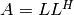 or 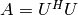, where 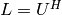 is lower triangular, and Cholesky factorization provides such an 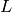 (or 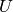) given an HPD 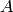. If is found to be numerically indefinite, then a NonHPDMatrixException will be thrown.
- void Cholesky(UpperOrLower uplo, Matrix<F>& A)¶
- void Cholesky(UpperOrLower uplo, DistMatrix<F>& A)¶
Overwrite the uplo triangle of the HPD matrix A with its Cholesky factor.
Note
See HPSDCholesky for a generalization which also works for semi-definite matrices.
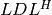 factorization¶
Though the Cholesky factorization is ideal for most HPD matrices, there exist
many Hermitian matrices whose eigenvalues are not all positive. The
factorization exists as slight relaxation of the Cholesky
factorization, i.e., it computes lower-triangular (with unit diagonal)
and diagonal  such that
such that  . If is found to
be numerically singular, then a SingularMatrixException will be thrown.
. If is found to
be numerically singular, then a SingularMatrixException will be thrown.
Warning
The following routines do not pivot, so please use with caution.
- void LDLH(Matrix<F>& A)¶
- void LDLH(DistMatrix<F>& A)¶
Overwrite the strictly lower triangle of with the strictly lower portion of ( implicitly has ones on its diagonal) and the diagonal with
.
- void LDLH(Matrix<F>& A, Matrix<F>& d)¶
- void LDLH(DistMatrix<F>& A, DistMatrix<F, MC, STAR>& d)¶
Same as above, but also return the diagonal in the column vector d.
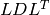 factorization¶
While the factorization targets Hermitian matrices, the factorization targets symmetric matrices. If is found to be numerically singular, then a SingularMatrixException will be thrown.
Warning
The following routines do not pivot, so please use with caution.
- void LDLT(Matrix<F>& A)¶
- void LDLT(DistMatrix<F>& A)¶
Overwrite the strictly lower triangle of with the strictly lower portion of ( implicitly has ones on its diagonal) and the diagonal with
.
- void LDLT(Matrix<F>& A, Matrix<F>& d)¶
- void LDLT(DistMatrix<F>& A, DistMatrix<F, MC, STAR>& d)¶
Same as above, but also return the diagonal in the vector d.
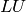 factorization¶
Given 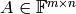, an LU factorization (without pivoting) finds a unit lower-trapezoidal 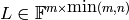 and upper-trapezoidal 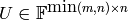 such that 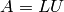. Since is required to have its diaganal entries set to one: the upper portion of can be overwritten with U, and the strictly lower portion of can be overwritten with the strictly lower portion of . If is found to be numerically singular, then a SingularMatrixException will be thrown.
- void LU(Matrix<F>& A)¶
- void LU(DistMatrix<F>& A)¶
Overwrites with its LU decomposition.
Since LU factorization without pivoting is known to be unstable for general matrices, it is standard practice to pivot the rows of during the factorization (this is called partial pivoting since the columns are not also pivoted). An LU factorization with partial pivoting therefore computes 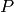, , and such that 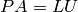, where and are as described above and is a permutation matrix.
- void LU(Matrix<F>& A, Matrix<int>& p)¶
- void LU(DistMatrix<F>& A, DistMatrix<F, VC, STAR>& p)¶
Overwrites the matrix with the LU decomposition of 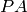, where is represented by the pivot vector p.
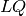 factorization¶
Given , an LQ factorization typically computes an implicit unitary matrix 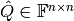 such that 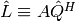 is lower trapezoidal. One can then form the thin factors and 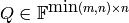 by setting and 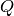 to first 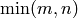 columns and rows of 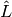 and 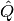, respectively. Upon completion is stored in the lower trapezoid of and the Householder reflectors representing are stored within the rows of the strictly upper trapezoid.
- void LQ(Matrix<R>& A)¶
- void LQ(DistMatrix<R>& A)¶
Overwrite the real matrix with and the Householder reflectors representing .
- void LQ(Matrix<Complex<R>>& A, Matrix<Complex<R>>& t)¶
- void LQ(DistMatrix<Complex<R>>& A, DistMatrix<Complex<R>, MD, STAR>& t)¶
Overwrite the complex matrix with and the Householder reflectors representing ; unlike the real case, phase information is needed in order to define the (generalized) Householder transformations and is stored in the column vector t.
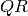 factorization¶
Given , a QR factorization typically computes an implicit unitary matrix 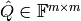 such that 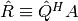 is upper trapezoidal. One can then form the thin factors 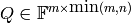 and 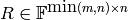 by setting and 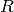 to first columns and rows of and 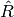, respectively. Upon completion is stored in the upper trapezoid of and the Householder reflectors representing are stored within the columns of the strictly lower trapezoid.
- void QR(Matrix<R>& A)¶
- void QR(DistMatrix<R>& A)¶
Overwrite the real matrix with and the Householder reflectors representing .
- void QR(Matrix<Complex<R>>& A, Matrix<Complex<R>>& t)¶
- void QR(DistMatrix<Complex<R>>& A, DistMatrix<Complex<R>, MD, STAR>& t)¶
Overwrite the complex matrix with and the Householder reflectors representing ; unlike the real case, phase information is needed in order to define the (generalized) Householder transformations and is stored in the column vector t.